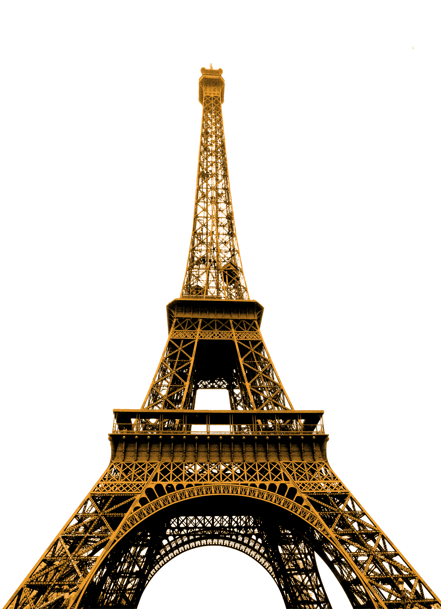
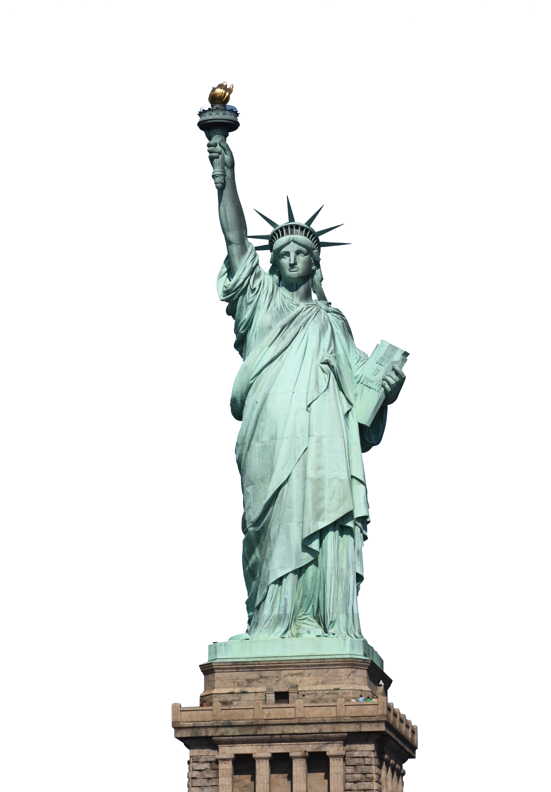
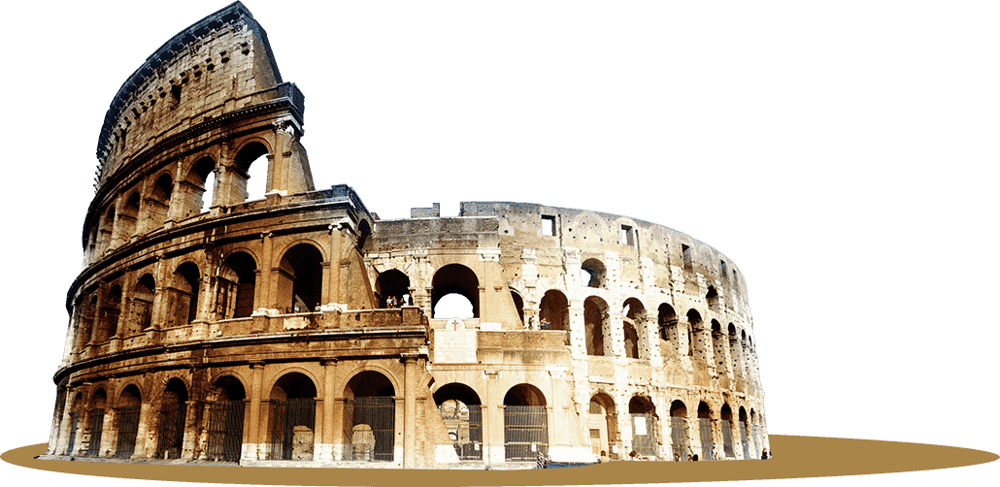
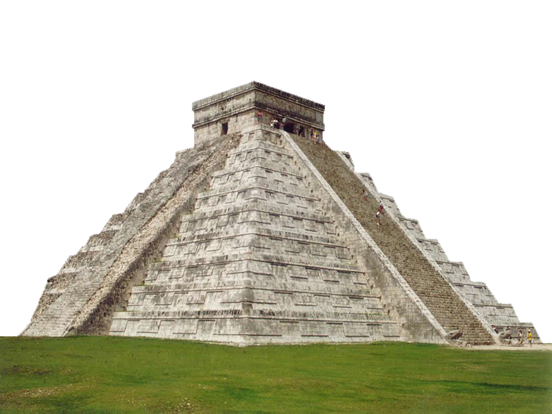

The benefits of traveling are not just a one-time thing: traveling changes you physically and psychologically. Having little time or money isn't a valid excuse. You can fly for cheap very easily. If you have a full-time job and a family, you can still travel on the weekends or holidays, even with a baby.

Paris
Also known as the Latin Quarter, the 5th arrondissement is home to the Sorbonne university and student-filled cafes. It's also known for its bookshops, including the famed Shakespeare & Company. Family-friendly attractions include the Jardin des Plantes botanical gardens and the National Museum of Natural History. The stately Panthéon building holds the remains of notables like Voltaire and Marie Curie.

New York
New York City comprises 5 boroughs sitting where the Hudson River meets the Atlantic Ocean. At its core is Manhattan, a densely populated borough that’s among the world’s major commercial, financial and cultural centers. Its iconic sites include skyscrapers such as the Empire State Building and sprawling Central Park. Broadway theater is staged in neon-lit Times Square.

Rome
Rome is the capital city of Italy. It is also the capital of the Lazio region, the centre of the Metropolitan City of Rome, and a special comune named Comune di Roma Capitale.

Mexico
Mexico, officially the United Mexican States, is a country in the southern portion of North America. It is bordered to the north by the United States; to the south and west by the Pacific Ocean; to the southeast by Guatemala, Belize, and the Caribbean Sea; and to the east by the Gulf of Mexico.